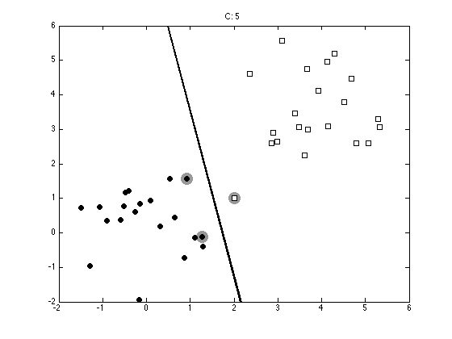
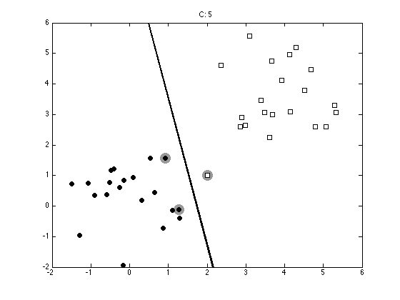
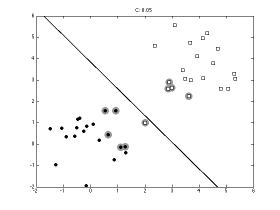
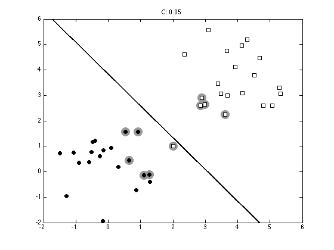

Contents
svmsoft.m
From A First Course in Machine Learning, Chapter 4. Simon Rogers, 01/11/11 [simon.rogers@glasgow.ac.uk] Soft margin SVM
clear all;close all;
Generate the data
x = [randn(20,2);randn(20,2)+4];
t = [repmat(-1,20,1);repmat(1,20,1)];
% Add a bad point
x = [x;2 1];
t = [t;1];
Plot the data
ma = {'ko','ks'};
fc = {[0 0 0],[1 1 1]};
tv = unique(t);
figure(1); hold off
for i = 1:length(tv)
pos = find(t==tv(i));
plot(x(pos,1),x(pos,2),ma{i},'markerfacecolor',fc{i});
hold on
end

Setup the optimisation problem
N = size(x,1);
K = x*x';
H = (t*t').*K + 1e-5*eye(N);
f = repmat(1,N,1);
A = [];b = [];
LB = repmat(0,N,1); UB = repmat(inf,N,1);
Aeq = t';beq = 0;
warning off
Loop over various values of the margin parameter
Cvals = [10 5 2 1 0.5 0.1 0.05 0.01];
for cv = 1:length(Cvals);
UB = repmat(Cvals(cv),N,1);
% Following line runs the SVM
alpha = quadprog(H,-f,A,b,Aeq,beq,LB,UB);
% Compute the bias
fout = sum(repmat(alpha.*t,1,N).*K,1)';
pos = find(alpha>1e-6);
bias = mean(t(pos)-fout(pos));
Optimization terminated.
Optimization terminated.
Optimization terminated.
Optimization terminated.
Optimization terminated.
Optimization terminated.
Optimization terminated.
Optimization terminated.
Plot the data, decision boundary and Support vectors
figure(1);hold off pos = find(alpha>1e-6); plot(x(pos,1),x(pos,2),'ko','markersize',15,'markerfacecolor',[0.6 0.6 0.6],... 'markeredgecolor',[0.6 0.6 0.6]); hold on for i = 1:length(tv) pos = find(t==tv(i)); plot(x(pos,1),x(pos,2),ma{i},'markerfacecolor',fc{i}); end xp = xlim; yl = ylim; % Because this is a linear SVM, we can compute w and plot the decision % boundary exactly. w = sum(repmat(alpha.*t,1,2).*x,1)'; yp = -(bias + w(1)*xp)/w(2); plot(xp,yp,'k','linewidth',2); ylim(yl); ti = sprintf('C: %g',Cvals(cv)); title(ti);
 
 


 
 
end